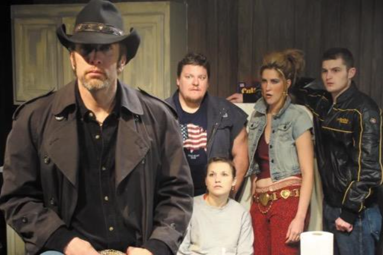
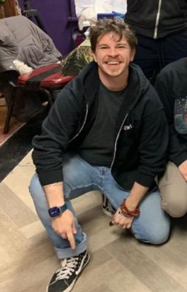

On stage, the audience sees the hero look longingly at his co-star. She returns his gaze. They embrace and enjoy a long and passionate kiss. In another play, the audience watches the previously hidden attraction between a lawyer and his young protégé dramatically explode into a physical connection so powerful that the two men consummate their love. These and many similar theatrical scenes are common on today’s stages, whether cozy hugs or simulated sex. When well done, the actors are as convincing as if one were in the room with them. While seemingly real, the scenes in fact are usually not real and must be carefully choreographed and artfully executed – that‘s the job of the fastest growing role in theater, the intimacy director.
For such scenes to work, today actors must be comfortable and feel safe, and these feelings vary from actor to actor; the play’s director has the responsibility for creating a safe environment on stage. Historically, however, all directors did not always make actors feel comfortable or safe. Jessica Steinrock, intimacy coordinator for TV, film and theater and CEO of Intimacy Directors and Coordinators, Inc. (IDC) observed, “The entertainment industry as a whole is one of the industries with the most sexual harassment…this has to do with a lot of factors, including short term contracts, strong power dynamics… gender politics…these have led to some really problematic practices around scenes of intimacy.”
Jessica Steinrock, CEO of IDC
Before the “Me, too” movement went viral in 2017 in the wake of charges against Harvey Weinstein, Chicago had its own scandal in 2016 with The Reader’s detailed expose of Profiles Theatre. Its award-winning, cutting-edge productions, and realism fulfilled its motto “whatever the truth requires.” The Reader’s story, however, revealed that the charismatic, Jeff award-winning actor and co-artistic director Darrell Cox had for years “physically and psychologically abused many of his co-stars, collaborators, unpaid cast members, and acting students, some of whom also became romantically involved with Cox while under his supervision at the theater… Fearing personal or professional retaliation, few witnesses ever came forward.” What looked real to the audience was often all too real to the actors.

Darrel Cox (left) in “Killer Joe” Photo: Sun-Times archive
The response was rapid. Actors distributed copies of the article in front of the theater. Copies were pasted on its front windows. Within a week, the theater announced it was closing. While Equity (union) actors had been able to register complaints with the union, non-equity actors like those at Profiles had no comparable institutional recourse. An effort to remedy this had begun in 2015 when Chicago actor Lori Myers posted a comment on Facebook about the need to deal with stories of exploitation of young women in the theater community. The significant response led to the creation of “Not in Our House;” and in 2017, Chicago Theater Standards, designed for theaters, particularly nonequity theaters, was published. The tenets of the document are “communication, safety, respect, and accountability.” The 33-page document specifically states it is nonbinding and establishes no accountability but seeks voluntary compliance. Protocols include dressing room accommodations, rehearsal time, and audition communication as well as on-stage presentation. Sample protocols read:
- Sexual Content and Nudity (SC/N) [on stage] require careful consideration as early as the season selection process.
- SC/N should only be included in a production when it can be done responsibly and according to the following recommendations.
RECOMMENDATIONS FOLLOW AND INCLUDE:
- A consent-building conversation should specify the range of contact that is acceptable (e.g. anything but bikini area is within range, or kissing is always closed mouth, etc.)
- Nudity during technical rehearsals should be limited to those times when it is absolutely necessary. Flesh-colored clothing or a robe may be worn when nudity is not required.
Since 2017 when HBO made a commitment to use intimacy coordinators on “The Deuce,” most film, TV and theatrical productions have added an intimacy director, choreographer, or coordinator (in film and TV, the title is intimacy coordinator, paralleling stunt coordinator, and following union guidelines. Intimacy director or choreographer are the terms used in live theater). Experience in theater broadly and special training are required to take on this role. Steinrock began in improv and stage fighting and transitioned to intimacy direction and intimacy education. She explained what is considered intimacy and generally requires an intimacy director: “Anything that requires simulated sex, anything that requires nudity, anything that requires extreme intimate physicality…a birthing scene…hyper exposure of a body part… Our goal (at IDC) has been to create a sustainable and accessible pathway, the highest quality education around this discipline as possible.”
Intimacy Director Sarah Scanlan is well equipped with tricks of the trade to both make the actors comfortable and give the audience the sense of reality.
Sarah Scanlan, actor and intimacy director
“I’ve got hundreds of ways to do the story of a kiss without lips ever coming into contact that will be just as hot, just as steamy as two actors actually making lip to lip contact… If the boundary is just lip to lip, we do a lot of neck kissing. Others are similar to stage combat…using distance masking motion to make it look like two actors are kissing even though their lips never come into contact.”
Mad Hip Beat and Gone” Promethean Theatre Photo: Tom McGrath
Scanlan got her entertainment start as an actor and an aerialist. She took a workshop that inspired her to add intimacy direction, storytelling plus advocacy. The first question she asks is: “Here’s what the playwright said happens in this moment…is that the best way for us to tell the story with the actors we have and with the rules we have in the theater? “
“I’m not here to be the touch police…I’m here to tell the story in the most exciting way possible…there were real problems with power dynamics. A director could tell an actor to do what he wanted and sometimes it would be from an abusive place. People being actually slapped on stage, assaulted on stage or off stage, people not knowing who to talk to if they were asked to do something they did not want to do, being asked to kiss a scene partner in an audition without consenting to that.”
“Anything that an audience can imagine is going to be better than what we can show them…we’re not going to actually knock someone out on stage. So can we start some sort of action that brings them off stage and we can hear it happening? How can we get the audience’s imagination involved?”
“Streetcar Named Desire” Copley Theatre
Scanlan’s recent production, “Streetcar Named Desire” at the Copley Theater (Paramount) in Aurora, featured a simulated rape scene. “One of the conversations we had to have was not only how do we keep the actors safe but how do we keep the audience safe and make it explicit enough so that people knew what had happened to this character, but we had to know our audience. And what we see at Paramount might be different from what we see at an experimental space.”
No clothes were removed for the scene in “Streetcar Named Desire,” but Scanlan still had the actors’ boundaries to choreograph: where and how hard could someone be grabbed, for example. She plotted out each movement. “What’s the final sequence we want to see? Certain steps of the script we had to hit. How do we connect them? Making a map of the scene was the first step…that was a very technical part of the scene.”
“The trickiest thing I had to choreograph in a different play was an alley space [a theater set up with seats down two sides of the stage area] in “I know My Own Heart.” “We had to have simulated oral sex between two women.” A combination of period garments and careful positioning of legs and pillows was worked out.
“I Know My Own Heart” Pride Films and Plays Photo: John Olson
Sometimes padding, modesty or barrier garments are worn. Yoga mats have been cut up and inserted in underwear for comfort. Pasties are used under lacy bras. Scanlan works closely with the costume designer to make the scene work and the actors feel respected. “We need to respect someone’s yes as well as no.”

Charlie Baker
“Othello” Court Theatre
Intimacy director Charlie Baker has worked with such Chicago theaters as TimeLine, Marriott Theatre (Jeff Nominated) for “West Side Story”, Court Theatre and Northwestern University. One of Baker’s early experiences as an intimacy director was for “Refrigerator” that involved sex between two men. “There’s a Ven diagram between intimacy and violence…but one of the overlaps is taking heightened action and turning it into choreography. For example, in a note to the actor, here’s where to place your head, now move your head in a figure eight position,” they said.
Baker explained that companies are making specific products for ensuring modesty or comfort on stage today. “Now you have what we colloquially call “cock socks” which are just pouches that come in a myriad to skin colors, which are wonderful and very useful. Now companies collaborate with intimacy directors who might need padding that can be taken in or out, depending if contact has to be made.”
Baker worked on the recent “Gods and Monsters,” Frame of Reference Productions, based on the novel by Christopher Bram, that tells the story of Hollywood director James Whale, known for “Frankenstein” and “The Bride of Frankenstein.” Whale (played by Norman Woodel), known widely as gay, develops a relationship with his gardner, Clayton Boone (played by Rashun Carter). The two struggle at one point when Boone is wearing a bathrobe. Baker relates that the challenge was keeping the bathrobe closed as they fought. When Boone drops the bathrobe, he presents his nude body with his back only facing the audience. Carter assured that his position on the stage ensured that only his back was exposed.
“Theater used to tend to be a space for “get naked first, ask questions later…the assumption was I’m comfortable with my body so the people around me must also be comfortable.” Now it’s a new way of thinking…we have an awareness…the crew has to also see this person all the time…now actors communicate with each other, they didn’t used to do that.”
Baker stresses that what happens on stage is just a small portion of the job. “The audience usually ends up seeing only about 20% of the work. Choreography is only a part of what we do…I have the power to say actually this is a closed rehearsal space, I’m sorry, lighting designer, you are not allowed to be here. It’s the care that it takes to get here. …a consent culture takes more than one person to maintain…it takes the whole community.”